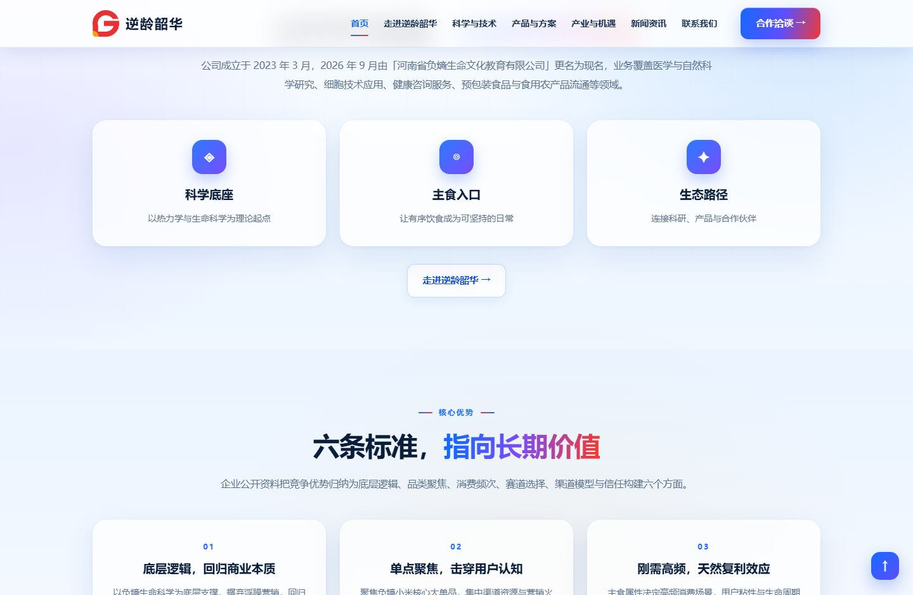
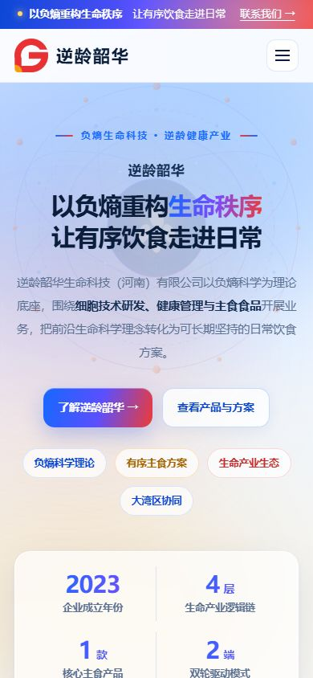
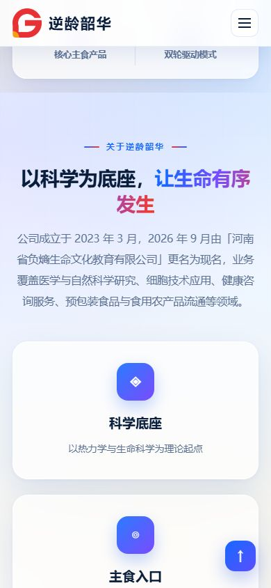

Niling Life Science · Case Study
A life-science brand site that turns an abstract concept into a daily food product.
Desktop and mobile, four views
Desktop home, desktop inner page, mobile home and mobile inner page.




From positioning to indexing
A life-science brand site that turns an abstract concept into a daily food product.
Positioning
An abstract scientific idea is introduced first, then broken into four industry layers before landing on one concrete product.
Structure
Theory, industry logic, products, a timeline and news move from abstract to specific, with a stable container for future updates.
Visual & colour
Warm rice-white and gold with dark brown or deep green text; low-saturation warmth makes technical content approachable.
SEO
Concept terms, product specifications and dated news cover both brand and category searches, while a compliance note keeps claims bounded.
GEO localisation
For overseas audiences this Life science could add language versions, local currency and regional contact details, with hreflang annotations and terms such as Niling Life Science rewritten for each market. Factual paragraphs stay quotable for Google and AI answers.
CRO experience
Trust comes from the case evidence above, with contact points and QR codes closing the page. Single-column mobile cards, large tap targets and up-front FAQ reduce drop-off.
Design strengths
Concept terms, product specifications and dated news cover both brand and category searches, while a compliance note keeps claims bounded. The same structure works for a GOSITE China plan and a GOSITE Global bilingual site: fixed sections carry the brand, while an update layer carries insights and industry news. See static pages and indexing and language annotations for the method. Visit the Niling Life Science website for the full site.
A similar website, live the same day
Chinese websites from ¥399 / year and bilingual sites at ¥1998 per site; domains are not included.